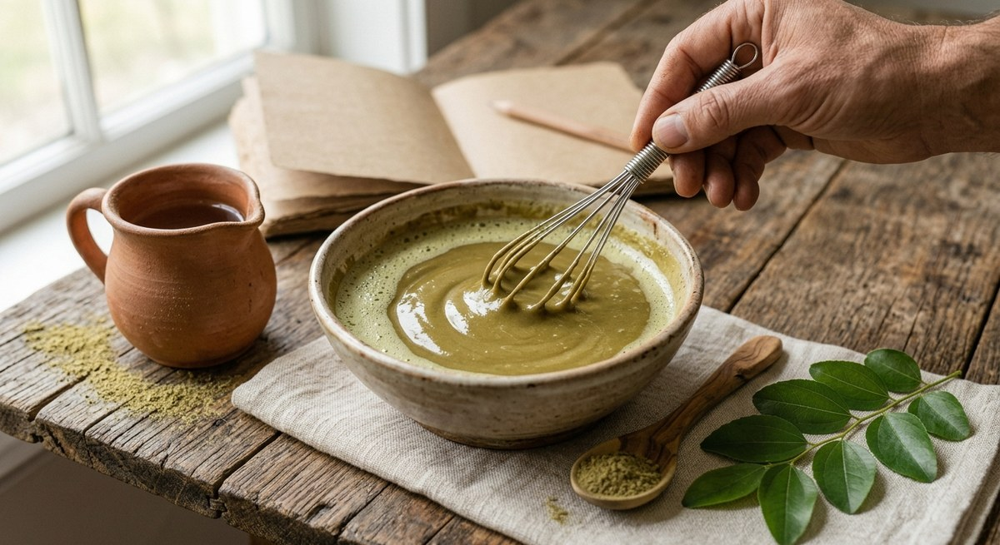

« Poudre de sidr avis », « sidr avant après », « poudre de sidr résultat » : avant d'acheter, on cherche la preuve que ça marche. C'est légitime, et c'est exactement là que les choses se compliquent, parce que les avis sont le type de preuve le plus facile à lire et le plus facile à surinterpréter. Cet article fait deux choses : rassembler ce que disent des avis réellement publics et consultables, puis expliquer ce que ces avis permettent — et ne permettent pas — de conclure.
Sidr et avis cheveux : ce que disent les retours publics
Commençons par des chiffres vérifiables. Sur la boutique européenne Ecco Verde, la poudre de sidr pure de la marque italienne Phitofilos affiche 4,4 sur 5 pour 56 avis, avec une répartition révélatrice : 39 avis à 5 étoiles (69 %), 8 à 4 étoiles, 4 à 3 étoiles, 2 à 2 étoiles et 3 à 1 étoile (Ecco Verde, avis sur la Poudre de Sidr Pure Phitofilos). Les avis francophones affichés y sont brefs et concordants : « Nettoie bien le cuir chevelu ! J'aime bien cette poudre pour laver mes cheveux fins » (Elena, février 2023), « Poudre fine et agréable » (Cloclo à Sion, avril 2022), « Bon produit… le cheveu est doux et léger au final » (Claire, mai 2016).
Sur une boutique française de coloration végétale, les quinze avis publiés sous une poudre de sidr bio disent la même chose avec d'autres mots : « Mes cheveux sont beaucoup plus brillants et doux » (Hélène), « Nettoie mes cheveux tout en douceur sans les dessécher. Mon cuir chevelu est apaisé » (Laura H.), et surtout, plusieurs fois, le même usage très précis : « La poudre de sidr ne fait pas dégorger ma couleur. Mes reflets sont intacts » (Caroline) (La Vie Nature, avis clients). Ce dernier point est intéressant parce qu'il recoupe exactement ce que la chimie laisse attendre : le sidr n'apporte pas de pigment, et le colorant du henné est lié à la kératine, pas simplement déposé — nous l'avons détaillé dans notre article sur sidr et henné pour les cheveux.
Un constat global, donc : les retours portent presque tous sur le lavage et le toucher — mousse discrète, cheveu souple, cuir chevelu apaisé, couleur préservée. C'est précisément le registre dans lequel la poudre de sidr est le mieux documentée. Les avis qui promettent une repousse spectaculaire sont, eux, l'exception.
Pourquoi 4,4/5 ne prouve pas que ça marche
Une moyenne élevée n'est pas un résultat d'étude, et ce n'est pas un détail de méthodologie : c'est une propriété connue et mesurée des avis en ligne. Trois chercheurs ont montré que la distribution des notes sur les plateformes marchandes a une forme en « J » — une masse d'avis très positifs, une petite poignée de très négatifs, presque rien au milieu — et que cette forme résulte de deux biais d'auto-sélection. D'abord un biais d'achat : seuls ceux qui pensaient déjà du bien du produit l'ont acheté, donc seuls eux peuvent laisser un avis. Ensuite un biais de sous-déclaration : les acheteurs d'opinion moyenne n'ont aucune raison d'écrire, contrairement à ceux qui veulent se féliciter ou se plaindre. Chez Amazon, 78 % des notes de livres et 73 % de celles des DVD étaient de 4 étoiles ou plus ; dans une expérience contrôlée où l'on demandait l'avis de tout le monde, le même disque ne recueillait que 3 % de 5 étoiles et 7 % de 1 étoile (Hu, Zhang & Pavlou, Communications of the ACM, 2009). Autrement dit : la répartition observée sur la poudre de sidr — 69 % de 5 étoiles — est exactement ce qu'on obtient pour n'importe quel produit correct, bien avant d'avoir appris quoi que ce soit sur son efficacité.
À cela s'ajoute un problème plus banal : tous les avis ne sont pas authentiques. La DGCCRF rappelle que 85 % des consommateurs déclarent être influencés par les avis publiés en ligne, et que la publication de faux avis peut constituer une pratique commerciale trompeuse, passible de sanctions (DGCCRF, comment la DGCCRF enquête sur les faux avis). Rien n'indique que ce soit le cas des avis cités ici — mais la prudence s'applique d'autant plus aux pages qui affichent 5/5 sans un seul retour nuancé.
Quel résultat attendre d'une poudre de sidr, et quand
Il faut séparer trois horizons de temps, parce que c'est là que naissent la plupart des déceptions.
Dès la première utilisation, l'effet attendu est un lavage. Les feuilles de Ziziphus spina-christi sont riches en saponines — dont les christinines, caractéristiques de l'espèce — ainsi qu'en flavonoïdes et polyphénols, d'après une revue ayant compilé 186 travaux sur l'espèce (Abdulrahman et al., Advances in Pharmacological and Pharmaceutical Sciences, 2022). Une analyse par HPLC identifie l'acide gallique et l'acide ellagique comme composés phénoliques majoritaires de la feuille (El-Shahir et al., Plants, 2022). Ce sont ces saponines, tensioactifs végétaux, qui expliquent la mousse discrète et le pouvoir nettoyant : un effet immédiat, visible le jour même, et sur lequel les avis sont unanimes.
Sur quelques semaines, ce que l'on peut espérer concerne le confort du cuir chevelu. La donnée la plus directe est un essai yéménite : un extrait éthanolique de feuilles de sidr formulé en shampooing, testé quatre semaines sur 80 volontaires souffrant de pellicules, avec 86 % d'améliorations déclarées (Alzomor et al., The Thai Journal of Pharmaceutical Sciences, 2021). Le chiffre est encourageant, mais il doit se lire avec ses limites, que nous détaillons dans notre article sur le sidr face aux pellicules et au cuir chevelu sec : aucun groupe témoin décrit, des résultats déclarés par les participants eux-mêmes, et un extrait concentré — pas la poudre brute appliquée en masque.
Sur plusieurs mois, c'est la promesse de pousse qui pose problème, pour une raison d'arithmétique avant d'être une question d'efficacité : un cheveu en phase de croissance pousse d'environ 1 cm par période de 28 jours (BioNumbers, Harvard, d'après Ruszczak, Textbook of Clinical Pediatrics, 2012). Un « avant/après » à trois semaines ne peut donc pas montrer de pousse : il montre une coiffure, un éclairage et un état d'hydratation. Et sur le fond, aucun essai clinique randomisé publié ne mesure un effet du sidr sur la densité, la chute ou la vitesse de pousse ; une formulation à base de Ziziphus spina-christi présentée comme « tonique capillaire » n'a en réalité été évaluée qu'en laboratoire — clarté, pH, mousse, stabilité — sans aucune mesure de croissance sur l'humain ou l'animal (Potdar et al., International Journal of Biology Pharmacy and Allied Sciences, 2022).
« Sidr avant après » : ce qu'une photo peut montrer
Les photos avant/après sont le format le plus convaincant et le moins fiable. Une photo peut montrer honnêtement un cheveu mieux démêlé, moins alourdi par des résidus, plus brillant parce que mieux nettoyé — tous effets plausibles d'un lavage efficace, et obtenus en une séance. Elle ne peut pas montrer une longueur gagnée en un mois (1 cm, soit l'épaisseur du trait sur l'image), ni distinguer l'effet du sidr de celui de l'arrêt simultané d'un shampoing agressif, d'un changement de saison, ou d'une coupe. Quand plusieurs choses changent en même temps, aucune photo ne dit laquelle a agi. C'est pour cette raison que la science clinique utilise des groupes témoins — et que leur absence, dans l'essai cité plus haut, est une limite réelle et non une chicane.
Les avis négatifs sont les plus utiles
Les 5 avis à 1 ou 2 étoiles du jeu de données Ecco Verde ne portent pas sur une absence de résultat mais sur la manipulation : difficulté d'application et formation de grumeaux (Colette, avril 2021), rinçage laborieux avec une sensation de résidu collant dans les cheveux (Fabienne, mars 2019). C'est un enseignement précieux, car ces deux problèmes ont des solutions connues : tamiser la poudre, verser l'eau tiède progressivement en fouettant plutôt que l'inverse, laisser reposer la pâte quelques minutes pour qu'elle gonfle, puis rincer longuement en démêlant au peigne large. Nos recettes de masques à la poudre de sidr détaillent les proportions. Une partie des avis déçus décrit donc un problème de technique, pas un produit inefficace — et une autre partie, probablement, un produit de qualité médiocre, ce qui ramène à des questions de pureté de la poudre et de choix de la boutique.

Comment lire un avis sur la poudre de sidr
Quelques réflexes simples permettent de trier :
- Un avis daté et nominatif vaut mieux qu'un verbatim anonyme repris sur une fiche produit : les premiers sont consultables et contestables, les seconds non.
- Cherchez la répartition, pas la moyenne. Une note globale ne dit rien ; 56 avis dont 5 négatifs argumentés en disent beaucoup plus, et une page sans aucun avis mitigé mérite la méfiance.
- Vérifiez de quoi parle l'avis. « Mes cheveux sont doux » est un constat direct et crédible. « Ça m'a fait pousser les cheveux de 5 cm en un mois » est physiologiquement impossible.
- Un avis négatif sur la texture n'est pas un avis négatif sur le produit : grumeaux et rinçage long sont des caractéristiques de toutes les poudres lavantes.
- Vérifiez quel produit est noté. Les origines et les espèces diffèrent — Maroc, Yémen, Inde ne désignent pas la même plante — et un avis excellent sur une poudre ne transfère pas à une autre.
Ce qui manque encore, et que personne ne peut combler avec des avis
À ce jour, nous n'avons identifié aucun essai randomisé contrôlé portant sur la poudre de sidr brute en usage cosmétique, aucune mesure instrumentale de l'état de la fibre après usage répété, aucune donnée sur la fréquence optimale, et aucune évaluation à long terme. Les avis, même nombreux et sincères, ne produiront jamais ces données : ils mesurent une satisfaction, pas un effet. Les deux sont utiles, à condition de ne pas les confondre. Et comme toute application cutanée, le sidr peut provoquer des réactions individuelles : un test sur une petite zone avant la première utilisation reste la précaution minimale, et un cuir chevelu douloureux, très rouge ou suintant relève d'un avis dermatologique.
À retenir
Les avis publics sur la poudre de sidr dessinent une image cohérente et plutôt rassurante : un nettoyant végétal doux, apprécié pour sa douceur et sa compatibilité avec les colorations végétales, dont les reproches portent sur la manipulation plus que sur le résultat. C'est une information réelle, et elle a de la valeur. Mais elle ne dit pas que le sidr « marche » : elle dit que les personnes qui l'ont choisi en sont généralement contentes. Pour la suite — un effet mesuré, comparé, reproductible — il faudra des essais que personne n'a encore publiés. En attendant, attendez de cette poudre ce qu'elle fait le mieux : laver en douceur.
Sources
- Ecco Verde — Avis clients sur la Poudre de Sidr Pure Phitofilos (4,4/5, 56 avis, répartition détaillée)
- La Vie Nature / Coloration Cheveux Naturelle — Poudre de sidr bio, avis clients publics
- Hu N., Zhang J., Pavlou P. A. — Overcoming the J-shaped distribution of product reviews, Communications of the ACM, 2009
- DGCCRF — Comment la DGCCRF enquête sur les faux avis
- Abdulrahman M. D. et al. — Ethnopharmacology, Biological Evaluation, and Chemical Composition of Ziziphus spina-christi (L.) Desf.: A Review, 2022
- El-Shahir A. A. et al. — Bioactive Compounds and Antifungal Activity of Leaves and Fruits Methanolic Extracts of Ziziphus spina-christi L., Plants, 2022
- Alzomor A. K. Y. et al. — Subacute Toxicity Study and Clinical Trials for Ziziphus spina-christi Leaves Extract as an Anti-dandruff Shampoo, The Thai Journal of Pharmaceutical Sciences, 2021
- Potdar M. et al. — Formulation and characterization of novel Ziziphus spina-christi herbal preparation, International Journal of Biology Pharmacy and Allied Sciences, 2022
- BioNumbers (Harvard) — Rate of hair growth during anagen phase, d'après Ruszczak Z., Textbook of Clinical Pediatrics, 2012